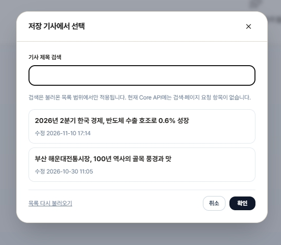
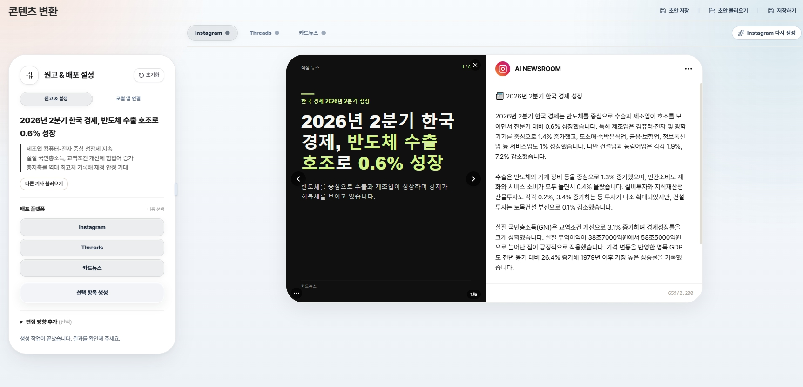
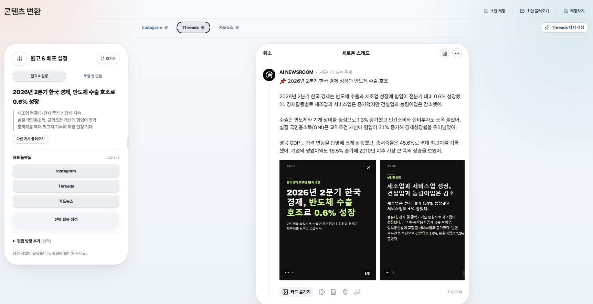
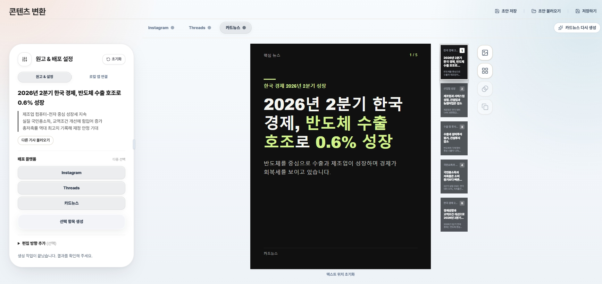
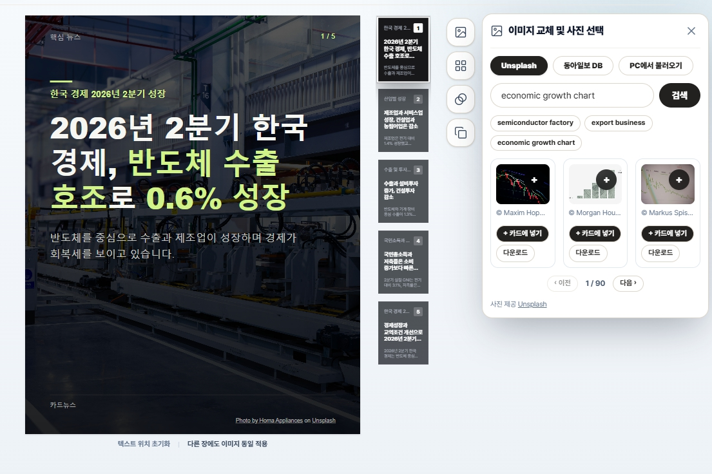

기능을 더하는 것보다 기자가 자료·원고·검증·배포 사이를 오가는 흐름을 정리할 필요가 있었습니다.
기자 업무를 기사 한 건의 흐름으로 연결한 로컬 뉴스룸 앱
AI Newsroom OS
반복은 줄이고, 취재에 더 가까이.
한 건의 기사를 한 번의 흐름으로
Team Finally · Team Project
기자 업무를 기사 한 건의 흐름으로 연결한 로컬 뉴스룸 앱
반복은 줄이고, 취재에 더 가까이.
한 건의 기사를 한 번의 흐름으로
01 · My Role / Platform Generator
원문 근거를 지키며 Instagram·Threads·카드뉴스로 변환하고 실제 게시까지 연결한 배포 기능을 맡았습니다.
플랫폼별 생성 로직과 프롬프트 · 원문 근거 검수 · 카드뉴스 렌더링 · Instagram/Threads 작성창 연결
전체 제품 UI/UX는 박소현님이 담당했습니다. 다음 장에서 팀의 역할과 공동 통합 작업을 구분해 설명합니다.

02 · Team Collaboration
각자 맡은 기능을 개발하고, Article ID를 기준으로 데이터와 화면을 맞췄습니다.
제품·데이터 설계
데스크 · Data Map · 보관함 · 접근 권한
앱 통합 · 팩트체크
계정 · 보안 · 백업
전체 화면 UI/UX
STT · 녹취
기사 작성 · 저장 · 송고
제목 · 부제 · 사진
플랫폼 원고 · 카드뉴스
근거 검수 · 렌더러 · SNS 연결
Article ID 기준 통합 · E2E 시나리오 · 병합 및 QA. 작성·저장 기능의 기사 고정본을 플랫폼 변환 입력으로 연결하고, 변환 결과를 공통 UI에서 검토할 수 있게 맞췄습니다.
팀 발표 HTML의 WBS 내용 기준. 개인 담당과 공동 산출물을 구분했습니다.
Field Research
기능을 더하는 것보다 기자가 자료·원고·검증·배포 사이를 오가는 흐름을 정리할 필요가 있었습니다.
수치와 인용을 원문에서 대조하고, AI 결과를 기자가 확인할 수 있어야 한다는 요구가 나왔습니다.
AI가 판단을 대신하지 않도록 역할을 제한하고, 취재 자료의 접근 범위도 명확히 해야 했습니다.
플랫폼 변환기에는 이 조사 방향을 반영해 기사 고정본 기준 생성 → 원문 근거 검사 → 편집자 검토 순서를 적용했습니다.
조사 기간 2026.09.21–10.02 · 인터뷰는 팀 전원 참여 · 설문지는 팀장이 설계. 10.08 프로토타입 피드백은 최초 9명 조사와 별도입니다.
02 · User Problem
“같은 기사를 다시 쓰지 않고, 각 채널에 맞게 바로 검토하고 싶다.”
기자 업무 흐름을 기준으로 기사 선택, 플랫폼 선택, 콘텐츠 생성, 편집, 게시 준비를 하나의 경로로 묶었습니다.
제품 흐름은 기사 ID와 불변 고정본(snapshot)을 기준으로 연결됩니다.

03 · Workflow
저장된 기사와 현재 원고를 확인하고 변환 대상을 고릅니다.
변환 입력을 기사 ID와 불변 snapshot에 묶습니다.
채널별 초안과 카드뉴스를 만들고 근거와 형식을 확인합니다.
공식 창에 글과 카드를 채운 뒤 계정과 내용을 확인해 게시합니다.
중간 발표 이후 기사 선택 → 플랫폼 선택 → 선택 항목 생성으로 진입 단계를 줄였습니다.
04 · Platform Prompts
도입·본문·마무리와 해시태그를 구조화하고, 각 문단에 원문 근거를 연결합니다.
짧은 설명형 글, 문체 일관성, 500자 제한과 카드 첨부 조건을 확인합니다.
주요 정보 배분표를 먼저 만들고 카드별 제목·답·상세 설명을 나눠 생성합니다.
사용자가 지정한 문체·키워드·편집 방향은 사실과 원문 근거를 유지하는 범위에서 우선 적용합니다.

05 · Key Code / Generation
platform-generator/instagram-generator.js · 핵심 발췌
const block = object({
text: string,
source_evidence: quotes
});
const schema = object({
emoji: { type: "string", enum: EMOJIS },
opening: block,
paragraphs: { type: "array", items: block },
closing: block,
hashtags: { type: "array", items: string }
});
text: { format: {
type: "json_schema",
name: "instagram_caption",
strict: true,
schema
}}기사 원문, 선택 키워드, 추가 편집 요청을 플랫폼 규칙과 함께 전달합니다.
도입·본문·마무리를 분리하고 각 단위에 source_evidence를 붙입니다.
필수 문장과 근거 누락, 형식 오류, 원문 밖 인용을 검출합니다.
05 · Evidence & Review
생성 응답만 믿지 않고, 구조 검사와 원문 대조를 별도 단계로 두었습니다.
Instagram·Threads·카드 초안에 원문 근거를 요구하고, 인용 구절의 실제 존재 여부를 코드로 검사합니다.
AI가 인용을 바꿔 쓰는 경우 원문 구절 목록의 번호를 선택하게 하고, 서버가 원문 문자열에 다시 연결합니다.
원문에 구절이 있다는 검사만으로 주장 의미까지 보증하지는 않아 별도 사실·의미 검수를 둡니다.

07 · Key Code / Evidence
platform-generator/draft-validator.js · 217–228행 발췌
function createQuoteChecker(article) {
const sourceParts = [
normalizeText(article.title),
normalizeText(article.content),
].filter(Boolean);
const quoteExists = function(quote) {
if (!hasText(quote)) return false;
const normalized = normalizeText(quote);
return sourceParts.some(source =>
source.includes(normalized));
};
return quoteExists;
}모델이 근거를 요약하거나 바꿔 쓰면 원문에서 확인할 수 없는 인용이 생깁니다.
카드뉴스 재시도에서는 원문 구절 번호를 고르게 하고 서버가 원문 문자열로 연결합니다.
문자열 존재 확인과 주장 의미 검수는 구분합니다. 의미·조건·발언 주체는 별도 검수 대상입니다.
06 · Card News Renderer


텍스트·사진·출처·위치를 조정한 뒤 JPG로 렌더링하고, 수정 시 이전 렌더 결과의 최신성을 다시 확인합니다.
09 · Key Code / Render & SNS
platform-generator/card-renderer.js · 451–468행 발췌
const page = await browser.newPage({
viewport: { width: 1080, height: 1350 }
});
await page.setContent(buildHtml(payload), {
waitUntil: "networkidle"
});
const fit = await page.evaluate(
require('./lib/card-template').fitCard
);
if (!fit.measured || fit.overflow || fit.overlap) {
throw new Error('카드 배치를 확인하세요.');
}
return await page.screenshot({
type: "jpeg", quality: 90, fullPage: true
});1080×1350 화면을 만든 뒤 글꼴과 사진 로딩을 기다리고 텍스트 넘침·겹침을 검사합니다.
Threads 서비스는 준비된 계정, 글, 첨부 이미지의 변경 여부와 15분 유효 시간을 확인합니다.
원고나 사진이 달라지면 다시 준비하도록 안내해 이전 작성 결과를 게시하지 않게 합니다.
07 · SNS Automation


공식 로그인 창에서 계정을 연결하고, 생성한 문장과 카드 순서를 작성창에 채웁니다. 이정민님은 실제 게시까지 검증했다고 확인했습니다. Instagram 계정 보기 ↗
08 · User Test
팀은 현업 기자 5명에게 기사 작성부터 SNS 변환까지 실제 흐름을 사용하게 했습니다.
피드백은 플랫폼별 글 길이와 카드의 정보 밀도를 더 정교하게 검수하는 후속 과제로 연결했습니다.
표본 5명으로 과업 성공률이나 시간 단축률은 주장하지 않습니다.
User Test / Detail
| 참여자 | 제목·부제 | STT | 팩트체크 | SNS | DataMap·보관함 |
|---|---|---|---|---|---|
| P1 | 3 | 5 | 4 | 4 | – |
| P2 | 5 | 4 | 2 | 5 | 5 |
| P3 | 5 | 4 | 5 | 4 | 3 |
| P4 | 3 | 1 | 2 | 5 | 3 |
| P5 | 4 | 4 | 5 | 5 | 1 |
| 평균 | 4.0 | 3.6 | 3.6 | 4.6 | 3.0 |
5점 척도 · DataMap·보관함은 n=4, 다른 영역은 n=5
4.6
SNS 변환 평균 / 5점
참여자별 점수에서 확인한 분포입니다.
팀 사용자 테스트 참여자 5명 중 1명의 세션을 진행했습니다.
현업 기자 5명 · 2026.10.13–10.27 · 5단계 과업. 표본이 작고 과업 성공 기준이 표준화되지 않아 성공률은 제시하지 않습니다.
User Test / Next Iteration
점수와 참여자 의견을 분리해 읽고, 후속 개선 기준으로 옮겼습니다.
P1은 SNS 원고의 반복 표현을 줄여 달라고 요청했습니다.
후속 과제: 중복 제거 기준 강화P3은 숏폼 형식 확장 의견을 냈습니다.
후속 과제: 지원 플랫폼 범위 검토팀은 플랫폼별 글자 수와 카드 정보 밀도 검수를 P2 개선 항목으로 정리했습니다.
후속 과제: 채널별 수용 기준 구체화텔레메트리 503개 행동 기록을 바탕으로 변환 시작부터 카드 이미지 준비까지의 중앙값은 1분 53초로 추정했습니다.
기존 방식 기준선이 없어 시간 단축률은 계산하지 않았습니다. 피드백 항목은 구현 완료 성과가 아닌 후속 개선 과제입니다.
09 · Outcome & Learning
플랫폼별 프롬프트, 근거 검수, 카드 렌더링, SNS 연결을 하나의 배포 경로로 구현했습니다.
n8n 기반 초기 구조에서 Node.js 기반 변환기로 옮기며 API와 생성·검수 기능을 다시 연결했습니다. 이 과정에서 기능 단위 검사와 실제 사용자 흐름의 검증이 함께 필요하다는 점을 배웠습니다.
향후 과제: 채널별 글 길이와 카드 정보 밀도 기준을 사용자 테스트로 더 구체화
실제 Instagram 계정 ↗01
기사 원문에서
여러 플랫폼까지
생성 로직 / 근거 검수 / 카드 렌더링 / SNS 작성창 연결
팀 전체 UI/UX: 박소현 · 사용자 테스트: 팀 공동